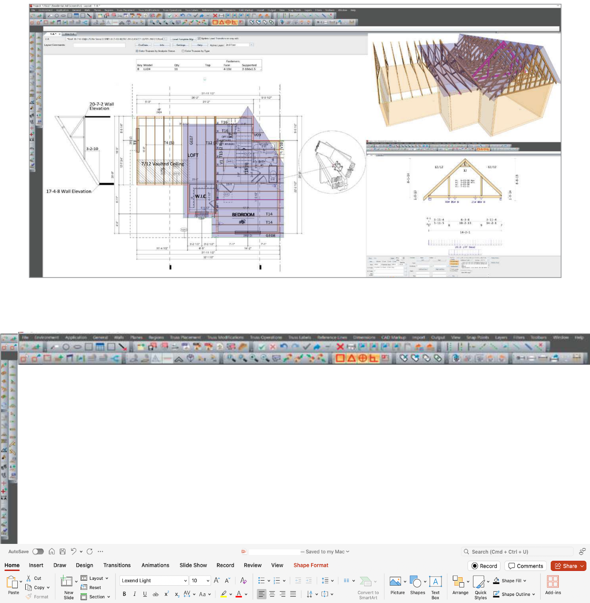
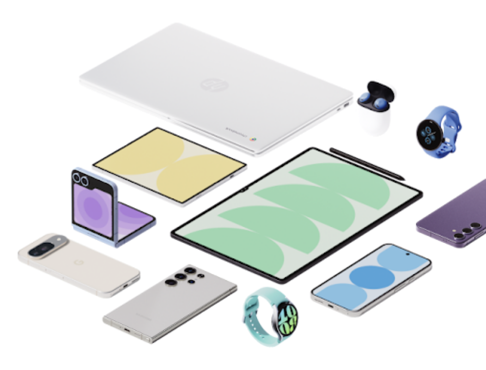

UX Researcher
Empathy & Curiosity in Digital Products.
Multi-modal methods excite & inspire my work. I find joy when I am triangulating quali-quant data across global markets.

Fastening Global Needs
Background
Web apps like Fastener Designer (US) are improving their UI, and EU’s paralleling products are reporting negative experiences.
Goals
Merge Fastener Designer (US) and Solid Wood (EU) to one product for a unified experience.
- Understand users’ experience and pain points of Finder Designer.
- How does this differ across countries, specifically the U.S. and the E.U.?
Methods
Unmoderated prototype test across US, EU, & Canada.
Key Finding
EU’s initial reaction: the UI felt overwhelming, but prefer the look and feel. Research highlighted onboarding as a key area for improvement.
Business & Product Impact
Early insights prevented costly rework post-launch and preserved credibility in 9 key international markets. Saved an estimated $250k-600k annually.


Simplifying the Studio: Ribbon Bar Redesign
Background
Subject matter experts highlighted the need for a more intuitive and efficient interface based on customers’ negative feedback on icon readability.
Goals
Learn about participants’ ribbon bar preferences and sentiments regarding layout, usability, and visual hierarchy.
Methods
Moderated interview, Participatory Design / Co-Creation Workshops.
Key Finding
Customization and favoriting allows users to focus on the tools they need to do their job. Enable customization to align with workflow needs.
Impact
Mapped tool expectations to workflows and delivered an impact-effort matrix, informing leadership’s roadmap.
Bridging Roles, Streamlining Processes
Background
Improve Front Line Managers’ dashboard and UX/UI, while integrating other departments’ roles and support to optimize organizational processes.
Goals
Examine mockups created from previous research to determine what FLMs need, want, or dislike.
Methods
Preference Testing, MVP planning, advance statistical analysis.
Key Finding
Users seem to prioritize the teams’ wellbeing and high-level data to analyze trends, while they consider phone numbers or generate QR code less important.
Business & Product Impact
Microsoft received a clear list of adoption barriers. The success of this project renewed Ipsos’ $150K contract and generated an additional $100K-$200K in annual research.


Mind the Ecosystem
Background
Google aims to uncover cross-device friction and missing features by exploring how users navigate daily tech ecosystems across Android, iOS, and competing platforms.
Goals
Identify competitor software and features that current internal systems does not support or lack.
Methods
Generative research, 6-month longitudinal study.
Key Finding
Ecosystem satisfaction dipped at month 3 after users added new devices. Video insights showed users lacked a clear mental model of their ecosystem.
Impact
Uncovered key cross-device pain points that shaped Google’s ecosystem strategy and informed iteration priorities across teams.